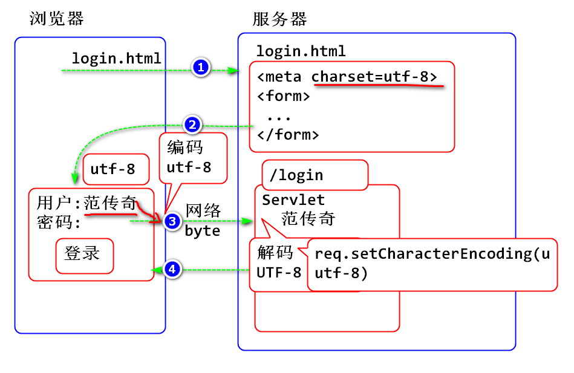
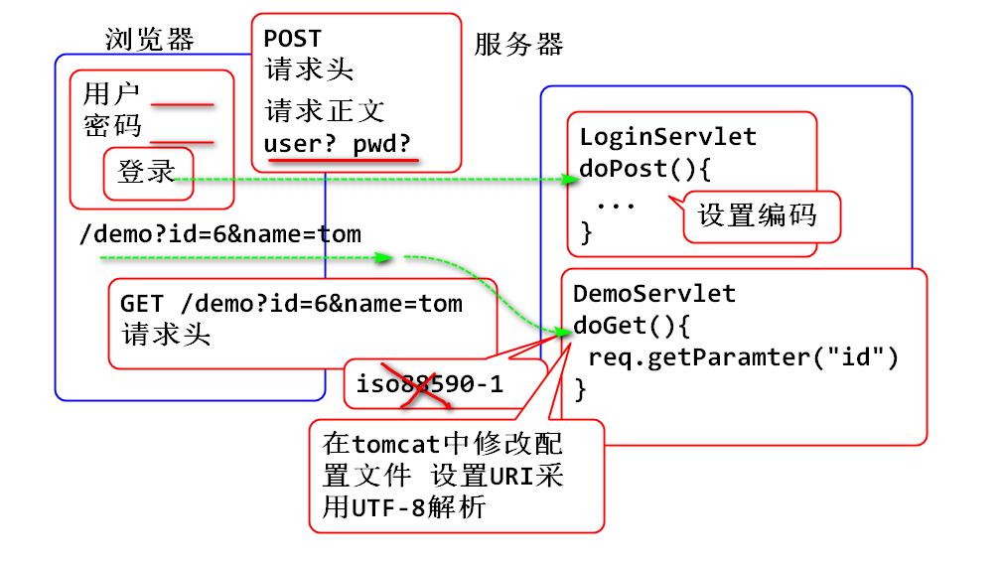
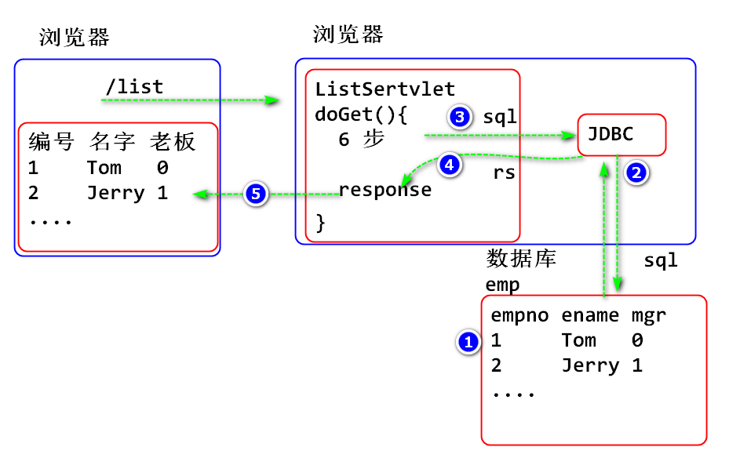
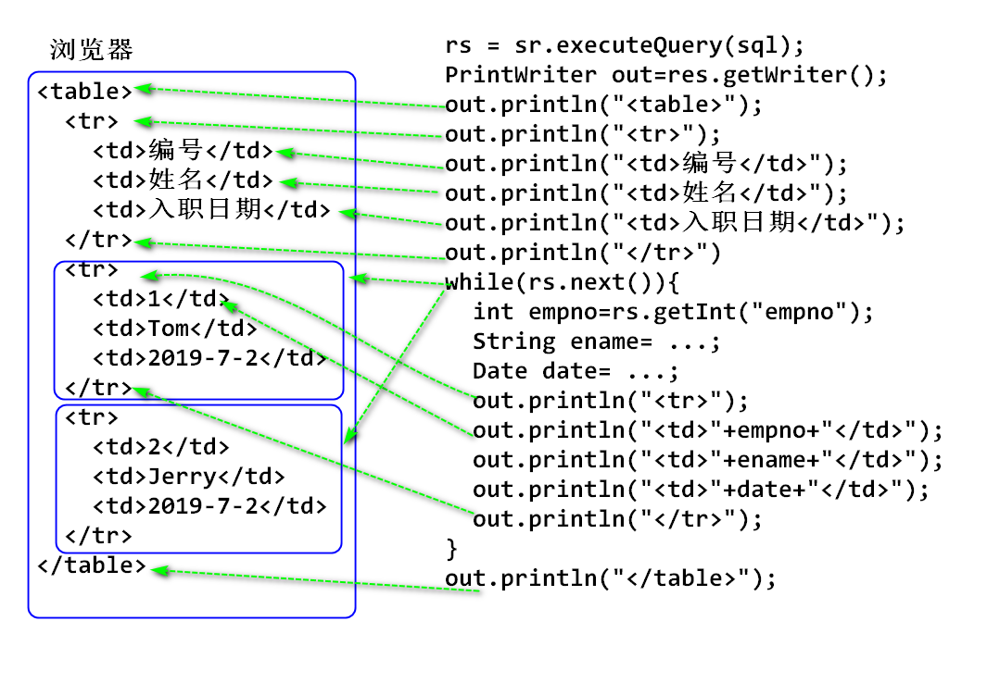

约定(规定)的意义
URL/URI: 语法规则一致:
协议://服务器/路径/资源名
URL 统一资源定位: 从你计算机开始能够唯一寻获的资源位置, 目标资源一定存在.
http://cdn.tmooc.cn/bsfile//imgad///4E6DEFE23ED047B2B4AB7AD8B963E9B0.png
URI 统一资源识别: 是一个名字, 其对应的位置未必有资源. 目标资源不一定存在, 只是用来作为唯一标识名!!
请求行 GET /demo HTTP/1.1 URI
Java WEB 目录结构
Java EE 规定了web容器中的WEB应用目录结构
webapps Tomcat WEB应用程序部署目录
|- examples Webapp WEB应用
| |- WEB-INF
| | |- lib
| | | |- mysql-jdbc.jar 第三方的jar包
| | |- classes
| | | |- xxx.class 编写的类文件
| | |- web.xml 部署描述文件
| |- index.html
wtpwebapps Eclipse创建了应用程序测试目录, 也是部署目录
|- Servlet02 Webapp WEB应用
| |- WEB-INF
| | |- lib
| | | |- mysql-jdbc.jar 第三方的jar包
| | |- classes
| | | |- xxx.class 编写的类文件
| | |- web.xml 部署描述文件
| |- index.html
WEB-INF 文件夹是用户不能直接看到的文件夹.
Eclipse 会自动在项目中创建目录结构, 在部署时候将目录结构复制到Tomcat中.
Maven 仓库检查步骤
修改Eclipse中的Maven settings.xml 文件
<mirror>
<id>huaweicloud</id>
<mirrorOf>*</mirrorOf>
<url>https://mirrors.huaweicloud.com/repository/maven/</url>
</mirror>
重启Eclipse 检查 Maven Repositories 是否连接到了Maven
Post 请求的编码
原理:

Post请求时候, 在获取请求参数之前设置请求的编码可以解决编码问题.
案例:
public class LoginServlet extends HttpServlet {
private static final long serialVersionUID = 1L;
protected void doPost(
HttpServletRequest request,
HttpServletResponse response)
throws ServletException, IOException {
//在读取参数之前设置request的编码,处理解码问题
request.setCharacterEncoding("UTF-8");
//利用request的API获取表单参数
String name = request.getParameter("user");
String pwd = request.getParameter("pwd");
System.out.println(name+","+pwd);
response.setContentType(
"text/html; charset=utf-8");
PrintWriter out=response.getWriter();
out.print("OK");
}
}
getParamter不仅可以接受post请求参数, 也可以接收get请求参数.

get编码问题可以在Tomcat配置文件server.xml中配置:
<Connector URIEncoding="UTF-8" connectionTimeout="20000"
port="8080" protocol="HTTP/1.1" redirectPort="8443"/>
案例:
public class GetDemoServlet extends HttpServlet {
private static final long serialVersionUID = 1L;
protected void doGet(
HttpServletRequest request,
HttpServletResponse response)
throws ServletException, IOException {
//接收浏览器通过 get 请求发送的参数
//如果浏览器没有提供对应的参数, 则接收到null
String id=request.getParameter("id");
String name=request.getParameter("name");
System.out.println(id+", "+name);
response.setContentType("text/html;charset=UTF-8");
PrintWriter out = response.getWriter();
out.print("OK");
}
}
配置:
<servlet>
<description></description>
<display-name>GetDemoServlet</display-name>
<servlet-name>GetDemoServlet</servlet-name>
<servlet-class>day03.GetDemoServlet</servlet-class>
</servlet>
<servlet-mapping>
<servlet-name>GetDemoServlet</servlet-name>
<url-pattern>/get-demo</url-pattern>
</servlet-mapping>
测试:
http://localhost:8080/Servlet03/get-demo
http://localhost:8080/Servlet03/get-demo?id=6
http://localhost:8080/Servlet03/get-demo?id=6&name=tom
http://localhost:8080/Servlet03/get-demo?id=6&name=你吃了吗
原理:

创建员工表:
create database web;
use web;
create table t_emp(
empno int auto_increment primary key,
ename varchar(100),
mgr int,
deptno int,
hiredate datetime,
salary double,
comm double
);
insert into t_emp (empno, ename, mgr, deptno, hiredate, salary, comm)
values (null, 'Tom', 0, null, now(), 1000, 200);
insert into t_emp (empno, ename, mgr, deptno, hiredate, salary, comm)
values (null, 'Jerry', 1, null, now(), 2000, 100);
检查:
select * from t_emp;
driver=com.mysql.jdbc.Driver
url=jdbc:mysql://localhost:3306/web?characterEncoding=utf8&useUnicode=true&useSSL=false
username=root
password=root
public class DBUtil {
private static String driver;
private static String url;
private static String username;
private static String password;
static {
try {
InputStream in = DBUtil.class.getClassLoader()
.getResourceAsStream("db.properties");
Properties cfg = new Properties();
cfg.load(in);
in.close();
driver = cfg.getProperty("driver");
url = cfg.getProperty("url");
username=cfg.getProperty("username");
password=cfg.getProperty("password");
}catch(Exception e) {
e.printStackTrace();
throw new RuntimeException(e);
}
}
public static Connection getConnection()
throws Exception{
Class.forName(driver);
Connection conn = DriverManager
.getConnection(url,username,password);
return conn;
}
public static void close(Connection conn) {
try {
if(conn!=null) {
conn.close();
}
} catch (Exception e) {
e.printStackTrace();
}
}
}
导入JUnit
<dependency>
<groupId>junit</groupId>
<artifactId>junit</artifactId>
<version>4.12</version>
</dependency>
编写测试案例:
public class TestCase {
@Test
public void test() {
System.out.println("Hello World!");
}
@Test
public void testHello() {
System.out.println("Hello Kitty!");
}
@Test
public void testGetConnection() {
String sql = "select now() d";
Connection conn = null;
try {
conn = DBUtil.getConnection();
Statement st = conn.createStatement();
ResultSet rs = st.executeQuery(sql);
while(rs.next()) {
Date date=rs.getDate("d");
System.out.println(date);
}
} catch (Exception e) {
e.printStackTrace();
}finally{
DBUtil.close(conn);
}
}
}
测试
原理:

代码:
public class ListServlet extends HttpServlet {
private static final long serialVersionUID = 1L;
protected void doGet(
HttpServletRequest request,
HttpServletResponse response)
throws ServletException, IOException {
//获得out对象
response.setContentType("text/html;charset=utf-8");
PrintWriter out = response.getWriter();
out.println("<!DOCTYPE html>");
out.println("<html>");
out.println("<head>");
out.println("<meta charset=\"UTF-8\">");
out.println("<title>登录表单</title>");
out.println("</head>");
out.println("<body>");
out.println("<h1>员工列表</h1>");
String sql="select empno, ename, mgr, "
+ "hiredate, deptno, salary, comm "
+ "from t_emp";
Connection conn = null;
try {
conn = DBUtil.getConnection();
Statement st = conn.createStatement();
ResultSet rs = st.executeQuery(sql);
//输出表格头
out.println("<table>");
out.println("<tr>");
out.println("<td>编号</td>");
out.println("<td>姓名</td>");
out.println("<td>入职日期</td>");
out.println("</tr>");
while(rs.next()) {
int empno = rs.getInt("empno");
String ename = rs.getString("ename");
Date date = rs.getDate("hiredate");
//System.out.println(empno+","+ename);
out.println("<tr>");
out.println("<td>"+empno+"</td>");
out.println("<td>"+ename+"</td>");
out.println("<td>"+date+"</td>");
out.println("</tr>");
}
out.println("</table>");
}catch (Exception e) {
e.printStackTrace();
} finally {
DBUtil.close(conn);
}
out.println("</body>");
out.println("</html>");
}
}
配置:
<servlet>
<description></description>
<display-name>ListServlet</display-name>
<servlet-name>ListServlet</servlet-name>
<servlet-class>day03.ListServlet</servlet-class>
</servlet>
<servlet-mapping>
<servlet-name>ListServlet</servlet-name>
<url-pattern>/list</url-pattern>
</servlet-mapping>
测试:
http://localhost:8080/Servlet03/list